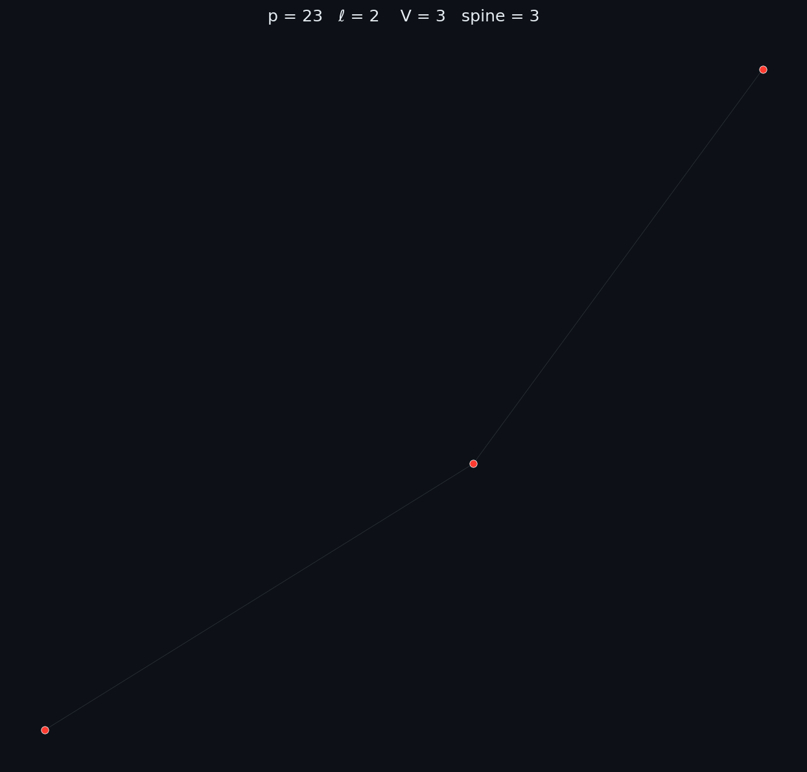
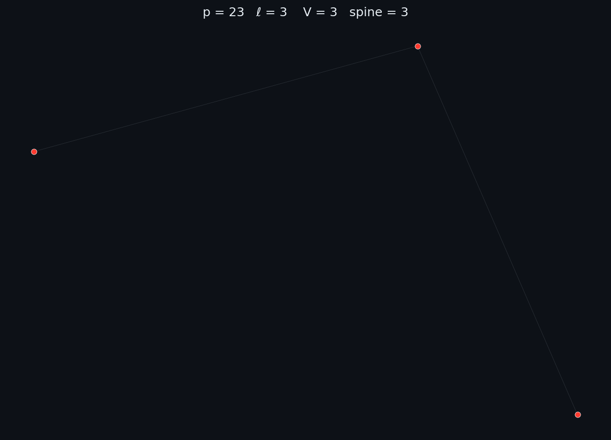
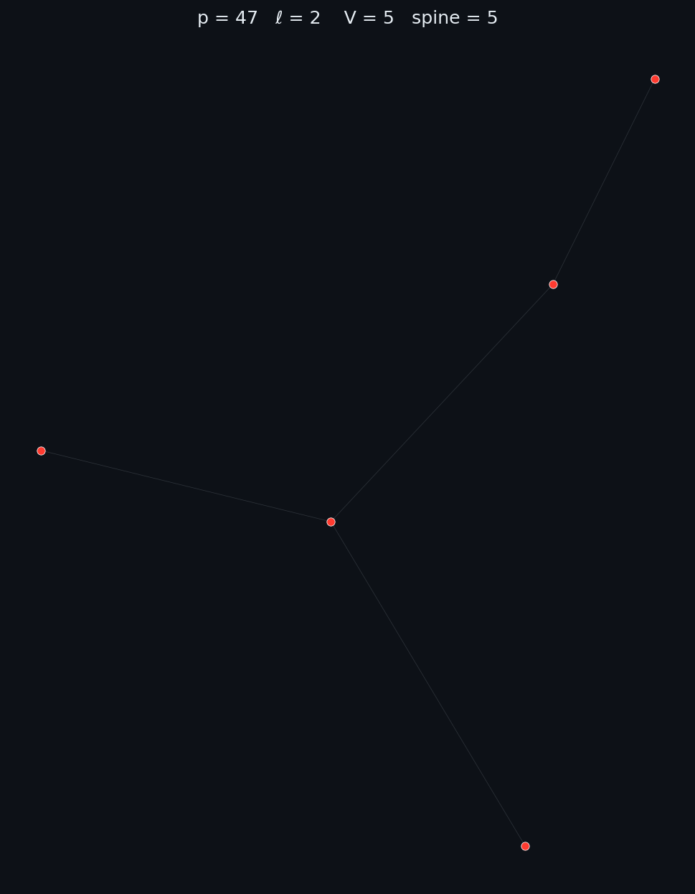
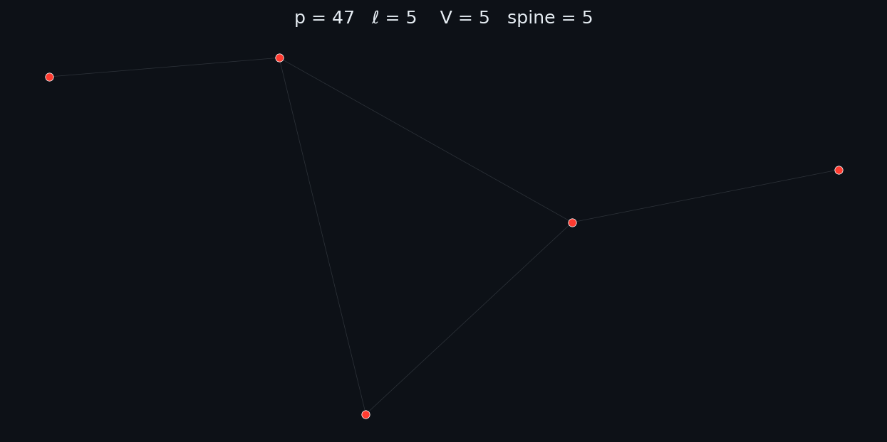
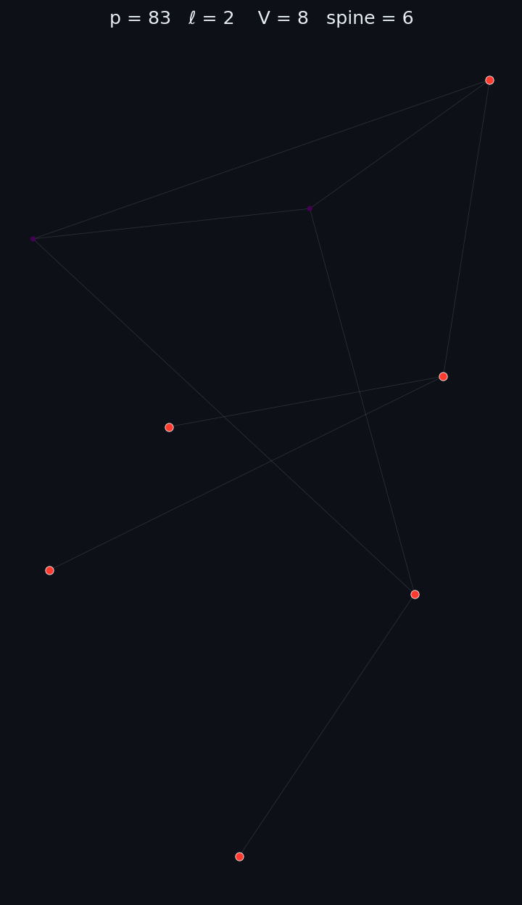
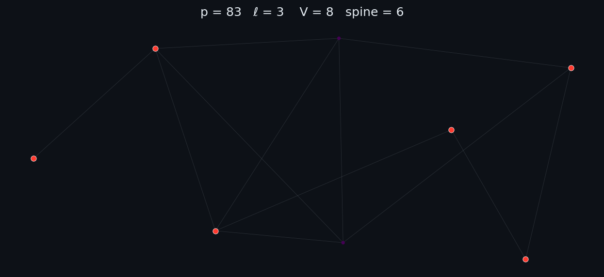
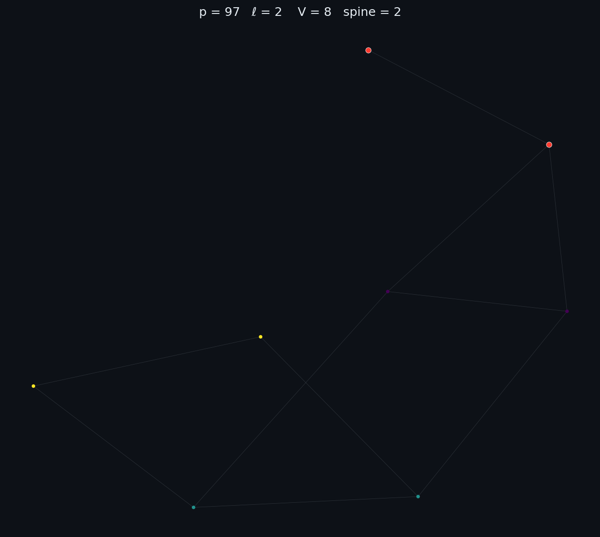
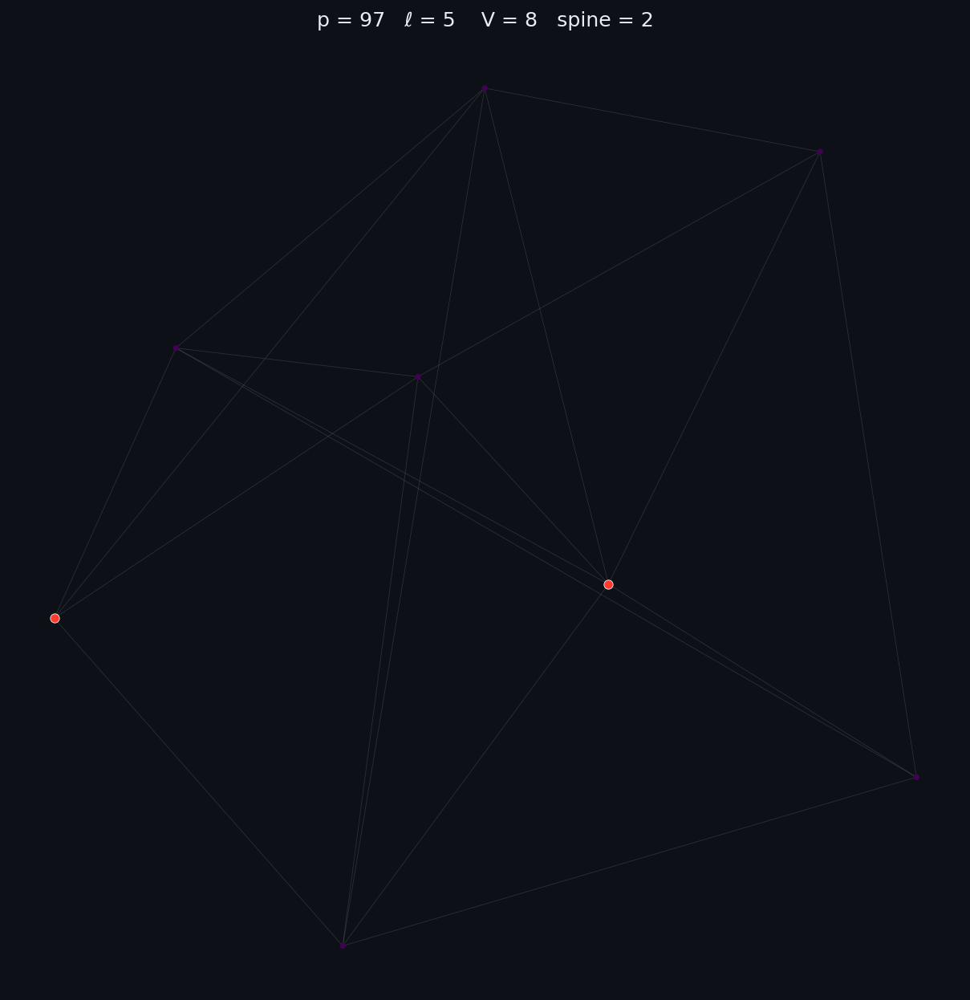

Force-directed layouts (anvaka's ngraph.forcelayout) of supersingular ℓ-isogeny graphs over 𝔽p². Data: the Isogeny Database (Florit & Finol, ODC-BY).
The spine is the set of vertices whose j-invariant lies in 𝔽p; other vertices are shaded by graph distance to the nearest spine vertex.
8 graphs · primes: 23, 47, 83, 97







